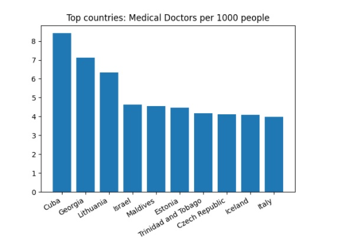

Caracteristicas avanzadas
En nuestro proyecto hemos hecho un uso intensivo de 2 funcionalidades que iban más allá de los explicado en clase.
En primer lugar, una funcionalidad clave de nuestro proyecto es la graficación para la que utilizamos la librería matplotlib. El motivo de haberle dado tanta importancia a la visualización de los datos es porque consideramos que el primer paso para entender correctamente la información es visualizarla gráficamente. Por esto, nuestra aplicación es capaz de generar gráficas para casi todas las consultas que permitimos hacer sobre los numerosos datasets con los que trabajamos (es decir sobre datos de covid, datos poblacionales, económicos y sanitarios). Pero vamos mucho más allá de esto, pues también graficamos todos los resultados obtenidos durante la fase de Machine Learning, mostramos gráficamente la organización en clústeres de nuestra población tanto en 2 dimensiones como en 3 dimensiones.
Veamos algunas de las gráficas que han sido obtenidas mediante consultas y que consideramos que son más interesantes
Esta gráfica representa la comparación entre el número de casos por millón de habitantes en un periodo de tiempo fijado por el usuario y entre cualesquiera dos países también fijados por el usuario. Esta gráficas es de líneas.
Otra de las gráficas que creemos que tiene mucho interés es un diagrama de sectores que representa la distribución de las nuevas muertes durante un periodo de tiempo fijado por el usuario por continentes.
También es muy relevante la gráfica que nos muestra una comparación entre el número total de muertes por mes durante toda la pandemia entre cualesquiera dos países fijados por el usuario. Esta gráfica está representada como un gráfico de barras.
Una de las gráficas más representativas es la que nos permite obtener la media el máximo y el mínimo de edad media por continent.
También son interesantes las gráficas que muestran los tops o bottoms de países en función de un indicador poblacional como por ejemplo la esperanza de vida o la población mayor de 65 años. Mostramos aquí la primera.
Una de las gráficas más representativas es la que nos permite obtener la media el máximo y el mínimo del índice de camas de hospital por continente.
También son interesantes las gráficas que muestran los tops y bottoms de países en función de un indicador económico como por ejemplo el producto interior bruto o el índice de pobreza extrema.
Una de las gráficas más representativas es la que nos permite obtener la media el máximo y el mínimo del índice de camas de hospital por continente
Otra gráfica importante es la que nos permite visualizar el top de los países con más médicos por cada 100000 habitantes 
Veamos algunas de las gráficas generadas durante el proceso de Machine Learning:
Gráficas en 2 dimensiones, que dadas dos variables representan los elementos de la población coloreados en función del cluster al que pertenecen.
Gráficas en 3 dimensiones, que dadas tres variables representan los elementos de la población coloreados en función del cluster al que pertenecen.
Además también se representa en un gráfico de líneas los valores del índice Silhouette que determina cuál es el número de cluster que mejores resultados va a obtener
En segundo lugar, otra funcionalidad clave de nuestro proyecto es el uso de Machine learning. Desde el primer momento consideramos muy interesante el tratar de encontrar relaciones entre los datos de la pandemia e indicadores económicos, poblacionales y sanitarios. Por ello, aplicamos la técnica de clustering K-Means (donde cada elemento de la población era un país) para clasificar en grupos a los países teniendo en cuenta los indicadores previamente nombrados.
Sacamos algunas conclusiones interesantes durante este proceso:Otro aspecto muy novedoso de nuestra aplicación es que se ejecuta como un script normal de python, con esto conseguimos aunar todos los scripts y funcionalidades de nuestra aplicación en una sola. Este script principal (main.py) funciona como un menú interactivo que va guiando al usuario por la aplicación y le va preguntando cuál es el siguiente paso que desea dar. De esta manera conseguimos una aplicación fácil de usar incluso para personas que no tengan conocimientos previos de informática.
- No encontramos ninguna relación clara entre la importancia que se le da a la vacunación y el número total de muertes por cada millón de habitantes. Como podemos observar en la imagen la gran mayoría de los países dan un porcentaje considerablemente de importancia a las vacunas y por tanto no podemos sacar ninguna conclusión clara.
- Sí encontramos una clara relación entre el número de médicos por cada 100000 habitantes y el número total de muertes por cada millón de habitantes. Y es que según los resultados que hemos obtenido parece ser que los países que tienen menos médicos por habitante tienen también un menor número de muertes. Esto va en contra de lo que podríamos pensar en un principio, podemos encontrar la justificación en que estos países con pocos médicos por habitantes, son también países con pocos recursos y donde los datos del coronavirus son recogidos con menos exactitud porque los medios de los que disponen no son comparables los de otros países más ricos.
El algoritmo de clustering diferencia en este caso dos grupos, uno el de los países con pocos médicos por cada 100.000 habitantes y con mortalidad relativamente baja y otro con más médicos por cada 100.000 habitantes (no se puede determinar que estos países tengan un menor número total de muertes).
- También encontramos una relación bastante esperable, y es que los países con un GDP bajo tienen menos camas de hospital por cada 100.000 habitantes. Sin embargo, un alto GDP no está relacionado necesariamente con un mayor número de camas por habitantes. Como podemos ver en el siguiente gráfico.
De nuevo en este caso el algoritmo de clustering, identifica dos grupos, por un lado un lado un cluster formado por los países con menos muertes, menor GDP y menor de camas de hospital por habitante y otro cluster donde los países tienen mayor GDP y mayor número de camas pero donde las muertes por COVID se mueven en una escala bastante amplia.
Veamos brevemente los pasos que debería seguir un usuario a la hora de utilizar nuestra aplicación.
- Al ejecutar ./main.py se le preguntará si está ejecutando el programa en un cluster o en local, esta comprobación es necesaria porque en el primer caso los ficheros deberán ser almacenados en hadoop FileSystem
- El siguiente paso (pensado más para usuarios experimentados) es fijar el número de instancias (en caso de que estemos ejecutando en un cluster) y el número de cores (tanto en cluster como en local) que desea utilizar para ejecutar los scripts de spark, pero lo mejor es que damos la opción de no explicitar estas cantidades en cuyo caso se utilizarán todas las instancias y todos los cores disponibles.
- En los siguientes pasos se permite al usuario hacer consultas sobre datos de coronavirus pero también sobre indicadores económicos, poblacionales y sanitarios. Además permitimos desde este menú la descarga de los datasets más modernos y la ejecución de machine learning.
- Pero… ¿Dónde se almacena y puedo visualizar toda la información de las consultas que voy realizando? Pues bien, toda la información se almacena en un directorio asociado a la sesión que se puede identificar fácilmente por su marca de tiempo. Este directorio contendrá para cada consulta su output y en caso de que se haya generado, también la(s) gráfica(s) asociadas.